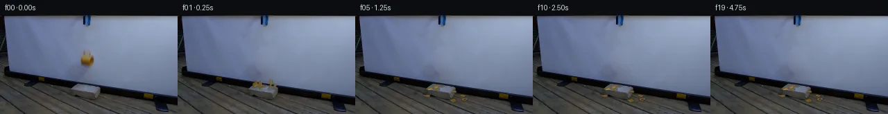

![首帧]()

Round 00
2026-11-05T13:36:04.636715+00:00像素候选变化代码 +305/−0inspection 更新
pixels e806bfe125845d7c · code 92be348a81efd46c
查看本轮 generate.py 真实 diff
--- previous/generate.py
+++ current/generate.py
@@ -0,0 +1,305 @@
+#!/usr/bin/env python3
+"""Local pixel reconstruction and a small analytic ceramic-fragment simulation."""
+from pathlib import Path
+from dataclasses import dataclass
+import math
+import numpy as np
+from PIL import Image, ImageDraw, ImageFilter
+from scipy.ndimage import gaussian_filter
+from artifact_io import save
+
+ROOT = Path(__file__).resolve().parent
+W, H, SS = 256, 144, 5
+G = 1100.0 # projected pixels per second squared
+CONTACT_T = 0.105 # drop already in progress in the supplied image
+DT = 0.0025
+rng = np.random.default_rng(126)
+source = np.asarray(Image.open(ROOT/'first_frame.png').convert('RGB'))
+
+
+def background():
+ """Replace the moving-object footprint by a local smooth screen fit."""
+ yy, xx = np.mgrid[:H, :W]
+ distance = np.sqrt(((xx-125.2)/15.7)**2 + ((yy-64.8)/21.0)**2)
+ hole = distance < 1.05
+ ring = (distance > 1.06) & (distance < 1.73)
+ x, y = (xx-125)/24., (yy-65)/28.
+ basis = np.stack([np.ones_like(x),x,y,x*x,x*y,y*y],axis=-1)
+ coef = np.linalg.lstsq(basis[ring], source[ring].astype(float),rcond=None)[0]
+ fitted = basis @ coef
+ # The original screen has very little high-frequency grain at this location.
+ residual = source.astype(float)-fitted
+ grain = gaussian_filter(rng.normal(0, .42, source.shape),sigma=(.6,.6,0))
+ fitted += grain
+ blend = np.clip((1.05-distance)/.14,0,1)
+ out = np.rint(source*(1-blend[...,None])+fitted*blend[...,None])
+ return np.clip(out,0,255).astype(np.uint8)
+
+BASE = background()
+
+
+def rotation(a):
+ cx,sx = math.cos(a[0]),math.sin(a[0]); cy,sy = math.cos(a[1]),math.sin(a[1]); cz,sz = math.cos(a[2]),math.sin(a[2])
+ rx=np.array([[1,0,0],[0,cx,-sx],[0,sx,cx]])
+ ry=np.array([[cy,0,sy],[0,1,0],[-sy,0,cy]])
+ rz=np.array([[cz,-sz,0],[sz,cz,0],[0,0,1]])
+ return rz@ry@rx
+
+
+@dataclass
+class Mesh:
+ vertices: np.ndarray
+ faces: list
+ label: str
+
+
+# Material names distinguish yellow glazing from the exposed ceramic edges.
+def wall(length, angle, label, seed):
+ rr=np.random.default_rng(seed); radius=5.35; thickness=.62; n=7
+ th=np.linspace(-angle/2,angle/2,n)
+ ends=np.array([[-length/2+rr.uniform(-.55,.55) for _ in th],
+ [ length/2+rr.uniform(-.5,.5) for _ in th]])
+ center=radius*np.mean(np.cos(th))
+ verts=[]
+ for r in [radius,radius-thickness]:
+ for row in range(2):
+ for j,t in enumerate(th):
+ verts.append([ends[row,j],r*math.sin(t),r*math.cos(t)-center])
+ faces=[]
+ for j in range(n-1):
+ faces.append(([j,j+1,n+j+1,n+j],'glaze'))
+ faces.append(([2*n+j,3*n+j,3*n+j+1,2*n+j+1],'inner'))
+ faces.append(([j,2*n+j,2*n+j+1,j+1],'edge'))
+ faces.append(([n+j,n+j+1,3*n+j+1,3*n+j],'edge'))
+ faces += [([0,n,3*n,2*n],'edge'),([n-1,2*n-1,4*n-1,3*n-1],'rim')]
+ return Mesh(np.array(verts),faces,label)
+
+
+def bottom_piece(label, start, stop, radius, seed):
+ rr=np.random.default_rng(seed)
+ th=np.linspace(start,stop,12)
+ outline=[[0,0]]+[[radius*math.cos(t)*(1+rr.uniform(-.05,.04)),radius*math.sin(t)*(1+rr.uniform(-.04,.04))] for t in th]
+ p=np.array(outline);p-=p.mean(axis=0)
+ vertices=np.vstack([np.c_[p,np.full(len(p),.40)],np.c_[p,np.full(len(p),-.40)]])
+ n=len(p);faces=[(list(range(n)),'glaze'),(list(range(n,2*n)),'inner')]
+ for i in range(n):
+ j=(i+1)%n;faces.append(([i,j,n+j,n+i],'edge' if i in [0,n-1] else 'rim'))
+ return Mesh(vertices,faces,label)
… diff truncated; 218 more lines …